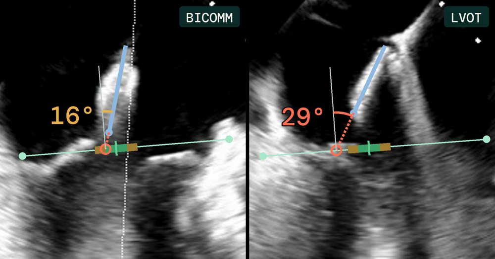
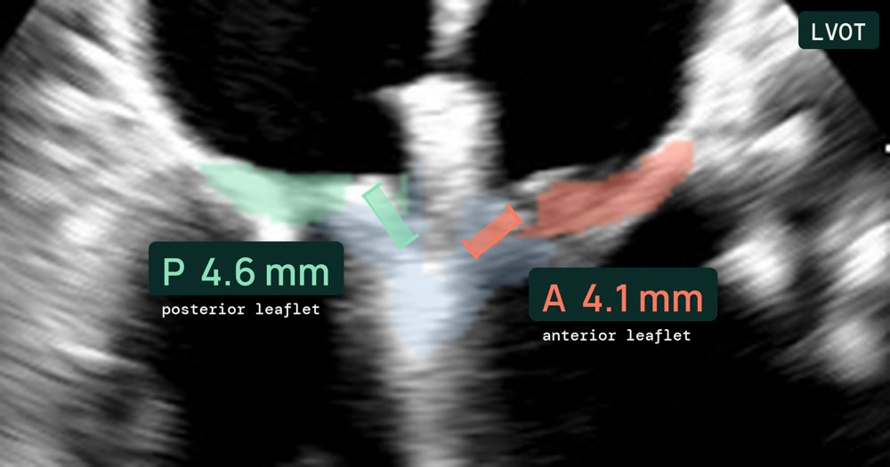
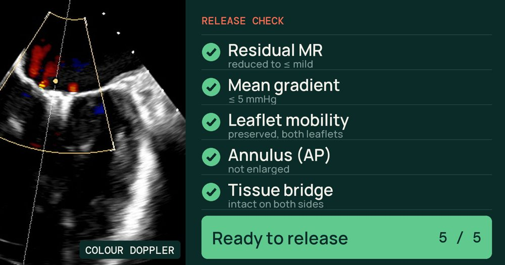
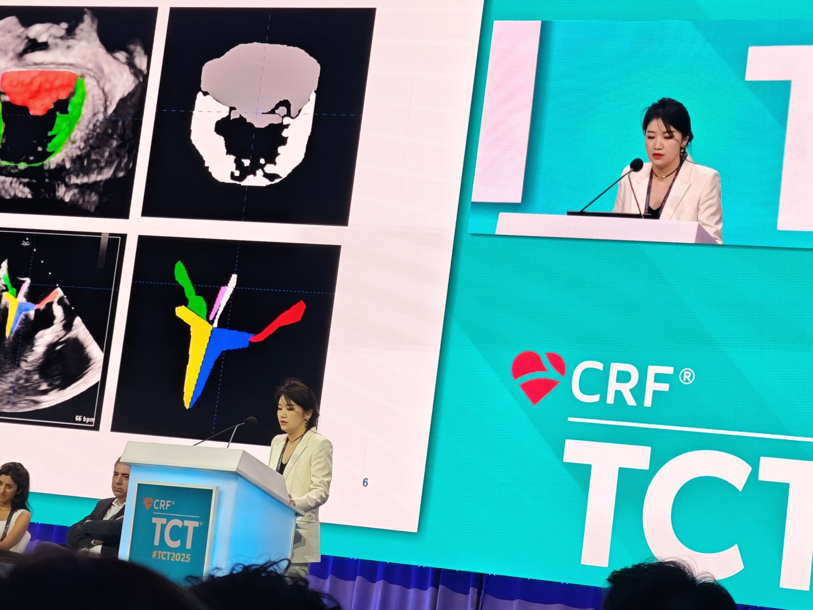
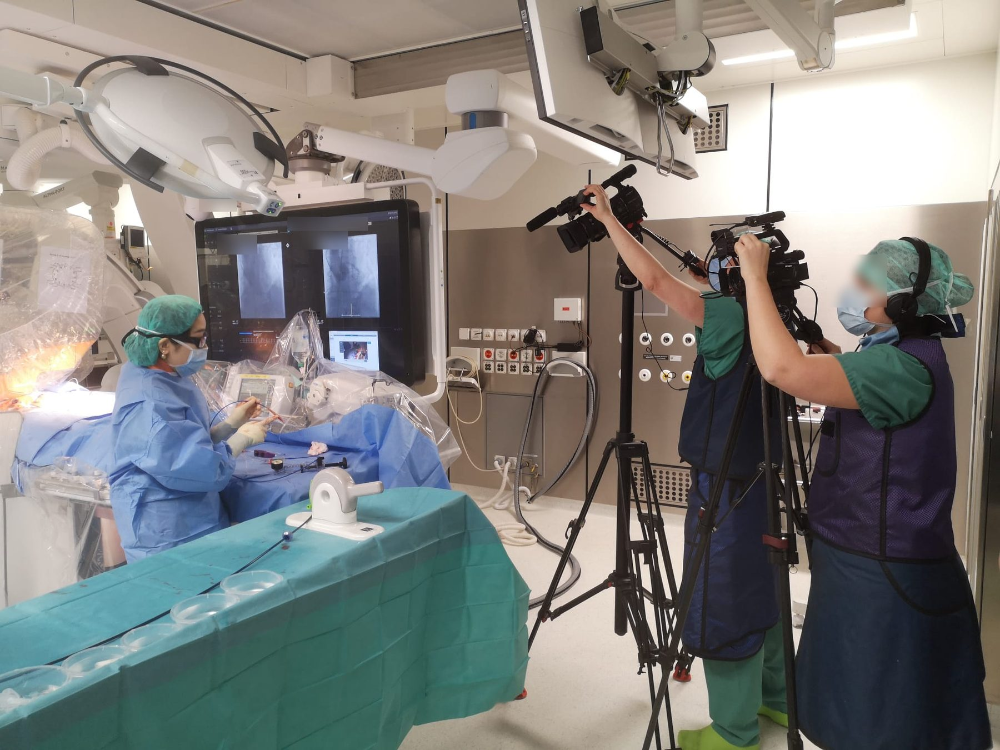

01
Position定位
Is the clip on target?夹子对准目标了吗？
Today现在Estimated from two planes by eye.凭肉眼从两个切面估计。
AutoClipClip trajectory onto the target, in both planes.夹子在两个切面上相对目标的轨迹。
During a catheter valve repair the operator steers by live ultrasound, and every decision is made by eye. AutoClip reads that image and gives the operator a measurement where there was a guess. 经导管瓣膜修复中，术者靠实时超声操作，每一个决策都凭肉眼。AutoClip 读懂这幅图像，在原来靠猜的地方给术者一个测量值。
Featured Innovation, San Francisco, while still a prototype旧金山 Featured Innovation，原型阶段即入选
TEER procedures from four centres, under data-use authorizations例 TEER，来自四个中心，经数据使用授权
clip-position error against expert labels, 34 held-out patients夹子位置与专家标注的误差，34 位留出验证患者
centres shown the demo asked to join external validation看过演示的中心全部要求参加外部验证
Where to place the clip, when to grasp, whether to release. The operator reads a grey, moving image, and there is not a single number on the screen. The result decides the patient's outcome, and the result depends on who operates. 夹子放在哪、何时抓、能不能释放。术者读的是一幅灰色的动态图像，屏幕上没有一个数字。结果决定患者的结局，而结果取决于谁在做。
disagreement between four experienced specialists on the same frame and the same landmark: the papillary muscle that decides clip position.四位资深专家在同一帧、同一解剖标志上的分歧。这个标志是决定夹子位置的乳头肌。
Turicor inter-observer studyTuricor 观察者间一致性研究death or heart-failure hospitalisation by two years, when residual leak after the procedure is minimal (≤1+) versus severe (≥3+).术后残余反流轻微（≤1+）与严重（≥3+）的患者，两年内死亡或心衰住院的比例。
COAPT · Kar et al., Circulation 2021optimal procedural success from an operator's first 25 cases to 50+. Most centres never reach fifty cases a year.术者前 25 例到 50 例以上的最佳手术成功率。多数中心一年做不到 50 例。
STS/ACC TVT Registry · Chhatriwalla et al., JACC 2019AutoClip segments 15 structures on every frame of the live echo (leaflet scallops, grippers, insertion points, papillary muscles, the clip) and turns them into a measurement for each of the three decisions. Decision support, not decision replacement: the operator stays in control. AutoClip 在实时超声的每一帧上分割 15 个结构（瓣叶分区、抓钳、插入点、乳头肌、夹子），把它们变成三个决策各自的测量值。辅助决策，不替代决策：控制权始终在术者手里。

Is the clip on target?夹子对准目标了吗？

Are both leaflets inside?两侧瓣叶都夹进去了吗？

Is the result good enough to let go?结果够好，可以释放了吗？
The video output it already has. Any vendor.它本来就有的视频输出。任何厂商。
Reads every frame. No hospital network, no cloud.逐帧读图。不接医院网络，不上云。
Measurements next to the live image the operator already watches.测量值显示在术者本来就在看的实时图像旁边。
Our advantage is not generic computer vision. It is specialist knowledge turned into labels and protocols, trained on in-domain data, and tied to what happened to the patient.我们的优势不是通用计算机视觉，而是把专科知识变成标注和规程，用术中数据训练，并与患者的真实结局挂钩。
structures defined on every frame, by operators个结构，由术者定义，逐帧标注
patients annotated, ~10,000 frames, under a written protocol例患者已标注，约 10,000 帧，按书面规程
annotators cross-checked: the expert ceiling was measured before the model位标注者交叉核对：先测专家上限，再评模型
procedures linked to registry follow-up, to test which readouts predict outcome例手术关联登记库随访，检验哪些读数能预测结局

One suture between the free edges of the two leaflets, Milan. A simple, reproducible repair.米兰。一针缝合两侧瓣叶的游离缘，简单、可重复的修复。
The same repair delivered through a catheter and judged on echo. 300,000+ patients; guideline therapy.同样的修复经导管完成，在超声上判断。30 万+ 患者，写入指南。
The machine learns to see the repair on the echo image. Every decision made by eye gets a number.机器学会在超声图像上看懂这台修复。每个靠肉眼的决策都有了数字。

“AutoClip is the tool I wanted on the screen every time I clipped a valve.”「AutoClip 是我每次夹瓣膜时，都希望屏幕上有的那个工具。」 Mi Chen
We start with the mitral clip. The goal is AI that understands the beating heart in real time, for every catheter procedure. The operating room comes first because it is where perception and action already meet, and every case closes the loop.我们从二尖瓣夹子开始。目标是能实时理解跳动心脏的 AI，服务每一台导管手术。先从手术室做起，因为那里感知与动作已经相遇，每一台手术都让闭环转一圈。
We are choosing two cath labs for research-only shadow-mode runs, in Europe and the US.我们正在欧洲和美国选两个导管室，做仅用于研究的影子模式运行。
hello@turicor.com → Device makers器械厂商Imaging AI and outcome evidence for clips that ship without it.为没有影像 AI 的夹子提供 AI 与结局证据。
hello@turicor.com → Engineers工程师ML and real-time imaging engineers who want their code in the operating room.想让自己的代码进手术室的 ML 与实时影像工程师。
hello@turicor.com → Investors投资人We are in the San Francisco Bay Area and happy to show the demo.我们在旧金山湾区，欢迎当面看演示。
hello@turicor.com →